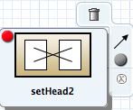
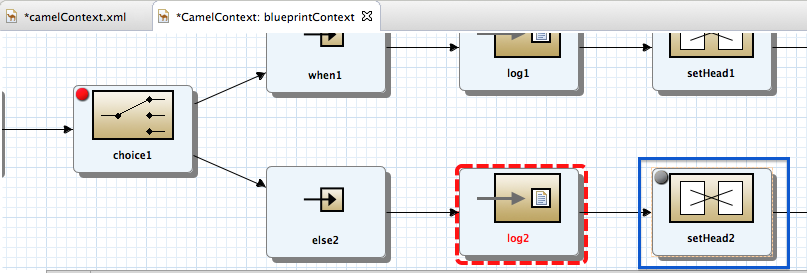
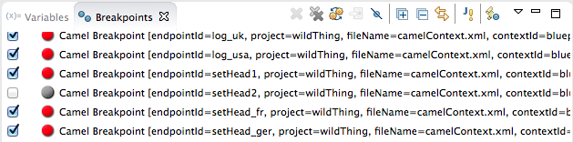
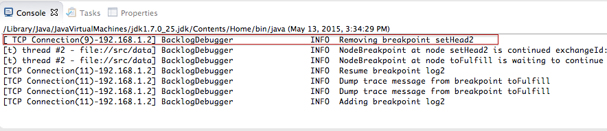
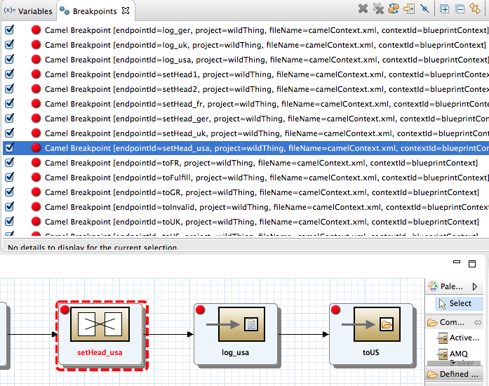
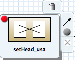
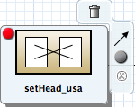
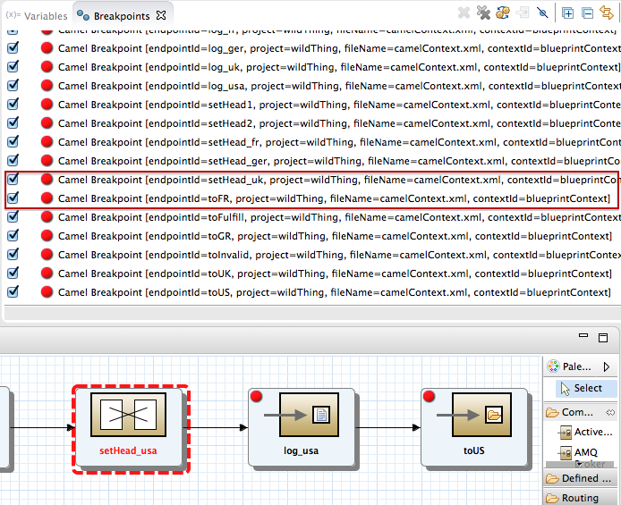

You can disable and re-enable breakpoints in a running routing context in either Breakpoints view or on the canvas of the running CamelContext: <xxxxxx>. You can delete and reset a deleted breakpoint only on the canvas of the running CamelContext: <xxxxxx>.
![[Note]](imagesdb/note.png) | Note |
|---|---|
The string |
When a breakpoint is disabled, the  button causes the debugger to skip over it during the debugging
session.
button causes the debugger to skip over it during the debugging
session.
Breakpoints view opens with all set breakpoints enabled.

To disable a breakpoint, clear its check box.

For each breakpoint you disable, Console view displays an INFO
level log entry noting that it has been disabled (for example, Removing
breakpoint to3). Likewise, for each breakpoint you re-enable,
Console view displays an INFO level log entry noting that it
has been enabled (for example, Adding breakpoint to3).
| Note |
|---|---|
To re-enable a disabled breakpoint, click its check box. Console view displays an INFO level log entry noting that the breakpoint has been added to the selected node. |
Make sure the routing context running in memory, CamelContext: <xxxxxx>, is active on the canvas.
On the canvas, select the node with the breakpoint you want to disable; for example:
Note The
 icon denotes an unconditional breakpoint. A
icon denotes an unconditional breakpoint. A  icon denotes a conditional breakpoint.
icon denotes a conditional breakpoint. Click the
 icon in the node's side bar.
icon in the node's side bar.The
icon replaces the icon in the node's upper left corner, indicating that the
breakpoint is now disabled:The node's check box in Breakpoints view is clear, also indicating that the breakpoint is disabled:
Console view contains a log of the event:
Note To re-enable the breakpoint, select the node, and then click the
 icon in its side bar.
icon in its side bar.
You can delete and reset deleted breakpoints only on the running CamelContext: <xxxxxx> canvas.
On the CamelContext: <xxxxxx> canvas, select the node whose breakpoint you want to delete; for example, setHead_usa:
Note that the node's breakpoint is enabled in Breakpoints view.
Note In the above graphic, the dotted red line surrounding the setHead_usa node identifies the breakpoint on which the debugger is currently suspended.
Click the
 icon in the node's side bar:
icon in the node's side bar:The breakpoint is removed from the node on the canvas and also from the list of breakpoints in Breakpoints view:
Note To reset the breakpoint, select the node, and then click the
or icon in its side bar, depending on whether you want to
set an unconditional or conditional breakpoint.